5. EVM Setup for J721S2¶
This section is intended to give a quick reference of EVM related to SDK usage. Full EVM documentation can be referenced at TDA4VL & TDA4AL system-on-module.
Important
The power supply current requires more than 1A @12V input
DisplayPort-to-DVI or DisplayPort-to-HDMI adapters don’t work with DisplayPort
The SOM board has to be tightly inserted into the connector sockets.
When connecting the fusion daughter card, the power cable connecting processor board and fusion board should look exactly like the picture in section J721S2 SOM. (P.S. The same cable from TDA2P EVM has the opposite wire connection at one end)
5.1. EVM Setup to run SDK demos¶
5.1.1. Daughter card requirements¶
Below table shows the daughter cards required for various features/demos
Feature |
Infotainment card |
Fusion 1 card |
IMX390+UB953 FPDLink sensors |
GESI card |
|---|---|---|---|---|
HDMI display |
REQUIRED |
na |
na |
na |
eDP (DisplayPort)display |
na |
na |
na |
na |
CSI2RX camera input |
na |
REQURIED |
REQURIED |
na |
CAN demos |
na |
na |
na |
REQUIRED |
5.1.2. UART terminal setup¶
Connect USB cable to Main UART port on common processor board (see Common Processor Board)
4 UART ports would be visible at the PC side
Port 0 from this is used this for Linux, RTOS UART terminal from A72
Setup UART for 115200 baud rate, 8 data bits, no party, 1 stop bit
5.1.3. Boot Modes¶
Bootmodes are selected using the SW8 and SW9 switches on the common processor board.
5.1.3.1. No Boot Mode¶
When you want the binaries to be loaded from a debugger (CCS), the common processor boards has to be set in the NO boot mode.
Following are the switch settings to do the same.:
SW8[1-8] = 1000 1000
SW9[1-8] = 0111 0000
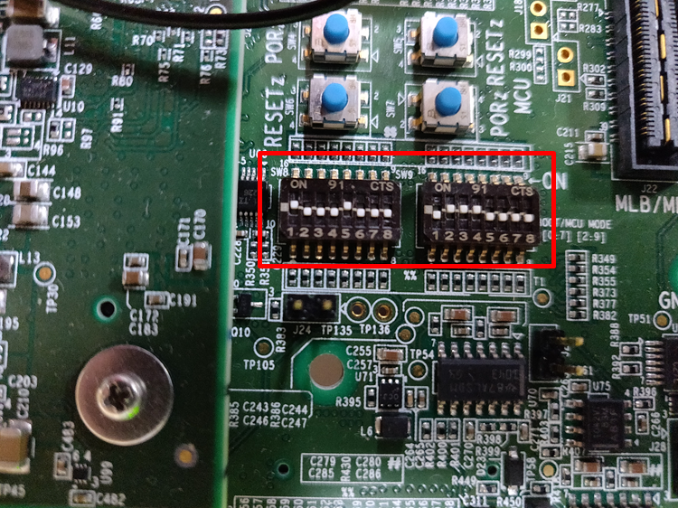
Fig. 5.1 No Boot Mode¶
5.1.3.2. SD Boot Mode¶
Following are the switch settings to set the boot mode to SD for common processor board.:
SW8[1-8] = 1000 0010
SW9[1-8] = 0000 0000
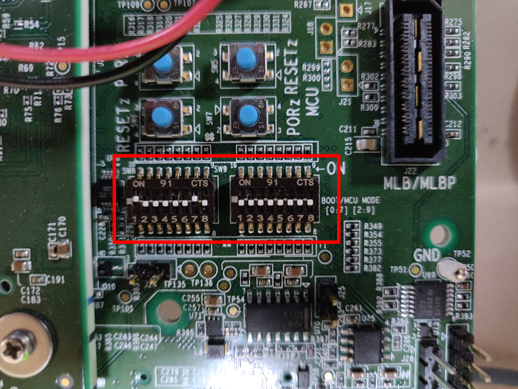
Fig. 5.2 MMC/SD Boot Mode¶
5.1.3.3. XSPI Boot Mode¶
Following are the switch settings to set the boot mode to XSPI for common processor board.:
SW3[1-8] = 0xxx xxxx
SW8[1-8] = 0000 1010
SW9[1-8] = 0110 0000
{kind=link}
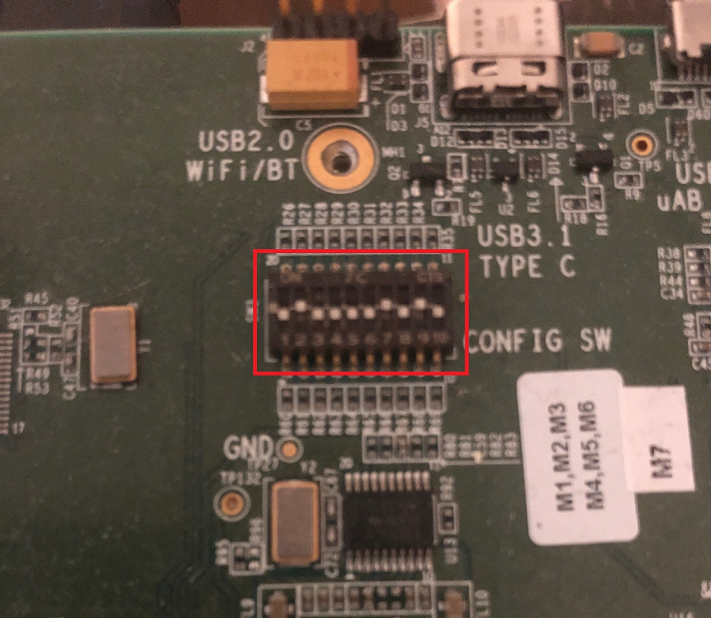
Fig. 5.3 XSPI Boot Mode SW3¶
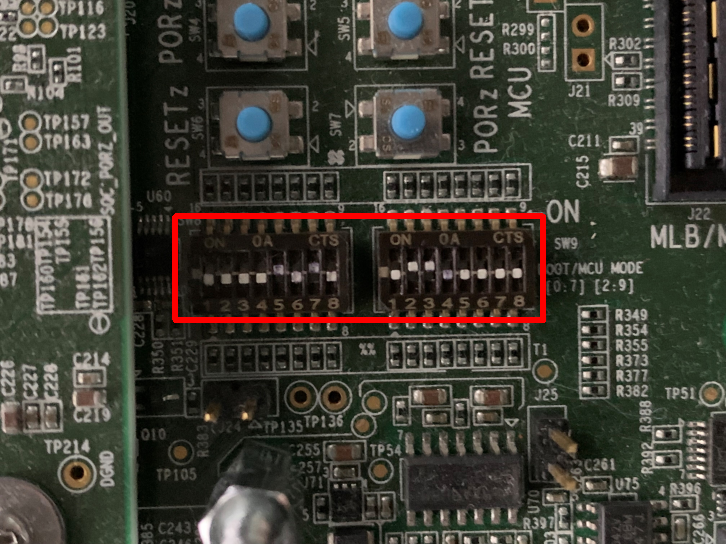
Fig. 5.4 XSPI Boot Mode SW8 and SW9¶
5.1.3.4. UART Boot Mode¶
Following are the switch settings to set the boot mode to SD for common processor board.:
SW3[1-8] = 0xxx xxxx
SW8[1-8] = 0000 0000
SW9[1-8] = 0111 0000
Fig. 5.5 UART Boot Mode SW3¶
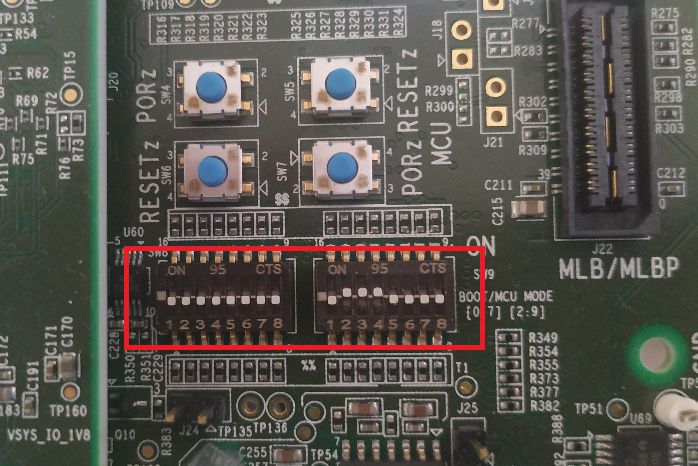
Fig. 5.6 UART Boot Mode SW8 and SW9¶
5.2. EVM and Daughter Card information¶
5.2.1. J721S2 SOM¶
The J721S2 Evaluation Module consists of a SOM (System on Module), shown in the red box below, fitted to a common processor board or base EVM.
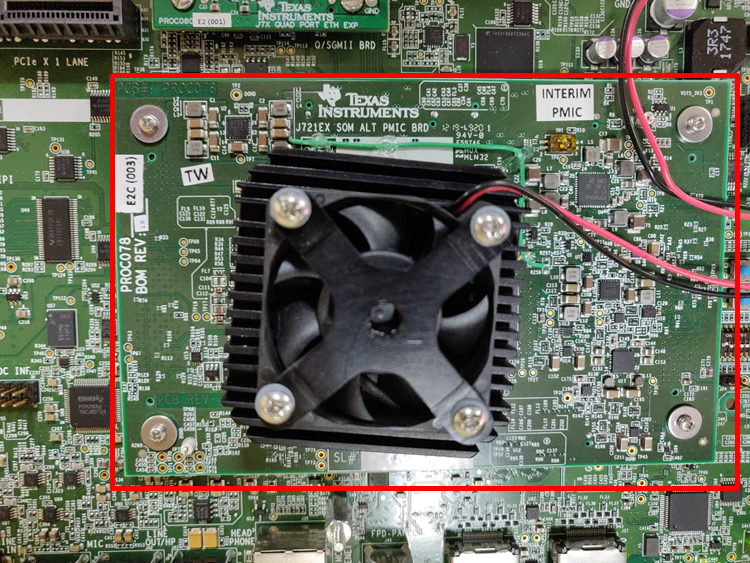
Fig. 5.7 J721S2 SOM¶
Contents of the board
J721S2 SoC
Power controller
4 GiB DDR RAM
OSPI NOR flash
Hyperflash
5.2.2. Common Processor Board¶
Common Processor Board is the main board which has peripherals to provide most common functionality. It has expander ports to connect to different adapter cards.
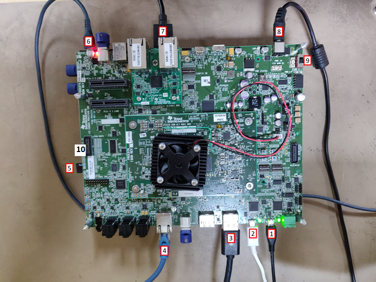
Fig. 5.8 J721S2 Common Processor Board¶
Contents of the board
4xUART to USB port for Main uarts
Port0 from this is used this for Linux, RTOS UART terminal from A72
2xUART to USB port MCU domain uarts
Port0 from this is used for Cortex M4F UART
Port1 from this is used for MCU R5F UART
2x Display (eDP/DP) ports
Display0 is used by software for eDP/DP output
Ethernet (CPSW2G) port
SD card slot
XDS110 on board USB JTAG connector
USB ports
12V Power input
Power switch
MIPI JTAG connector
5.2.3. Infotainment daughter card¶
Infotainment daughter card is adapter board which has additional peripherals for infotainment use cases. This has support for HDMI display, FPDlink display extra audio channels.
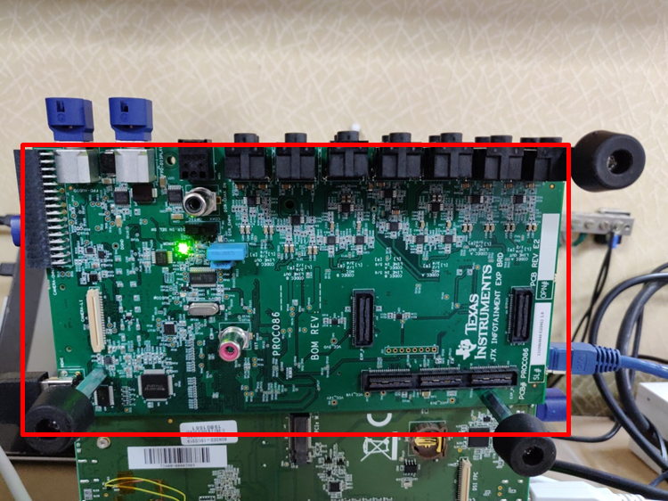
Fig. 5.9 Infotainment daughter card¶
Contents of the board
HDMI display connector
2x FPDlink display connectors
14x 3.5mm audio jacks
Parallel port Omnivision camera connector (direct connection, i.e no FPDLink)
CSI camera connector (direct connection, i.e no FPDLink)
5.2.4. Quad Port Ethernet daughter card¶
Quad Port Ethernet (QPENet) board is an adapter board which offers additional Ethernet port capabilities to the Jacinto7 EVM.
Note
J721S2 does not make use of this card. It is used by other SoCs in the Jacinto Family.
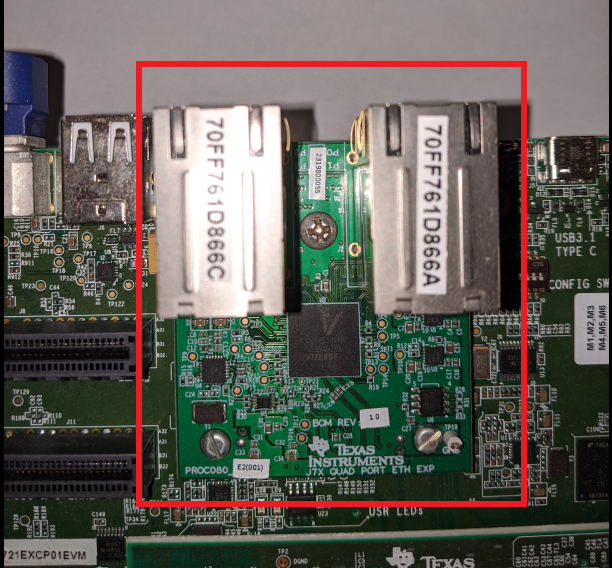
Fig. 5.10 QPENet daughter card¶
5.2.5. GESI daughter card¶
GESI(Gateway/Ethernet Switch/Industrial) daughter card is an adapter board which has additional peripherals for gateway and industrial use cases. This has support for extra Ethernet ports and CAN ports.
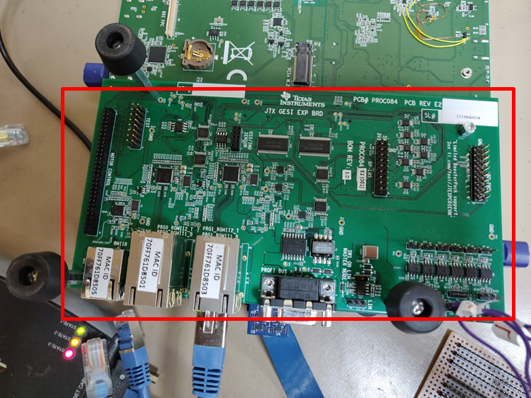
Fig. 5.11 GESI daughter card¶
Contents of the board
5x Ethernet ports (J721S2 only uses port PRG0_RGMII1_B)
Profinet connector
Motor control headers
Additional CAN Transceivers/ headers
5.2.6. Fusion daughter card¶
Fusion daughter card is adapter board to connect 4 camera sensors (IMX390+UB953 serializer) through de-serializer (UB960) available on the Fusion1 daughter card to CSI2RX ports of J721S2 SoC.
Connect the daughter card to common processor board at “CSI2 Exp” connector J25.
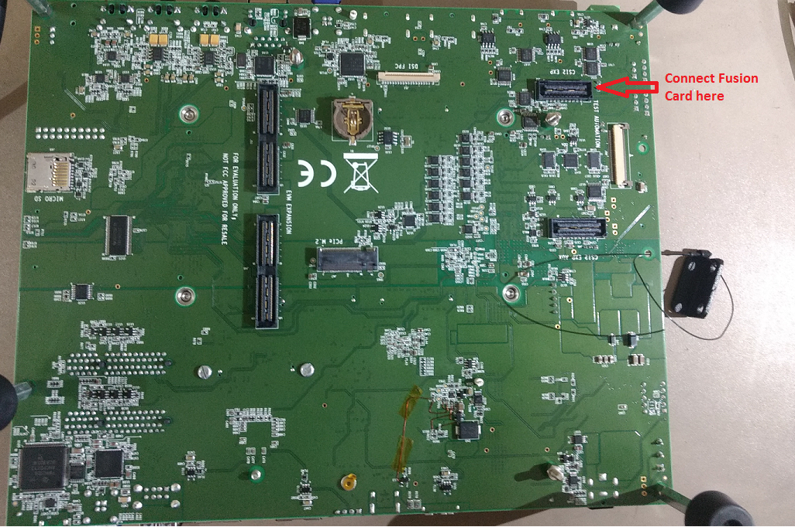
Fig. 5.12 CSI2 Exp Connector¶
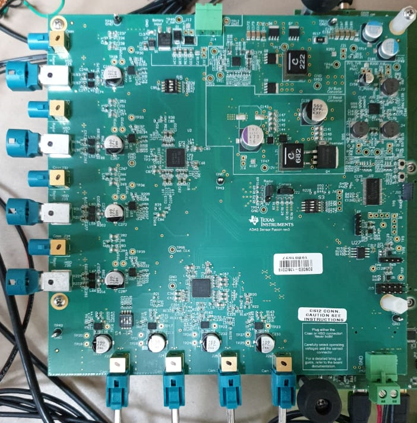
Fig. 5.13 Fusion1 Board¶
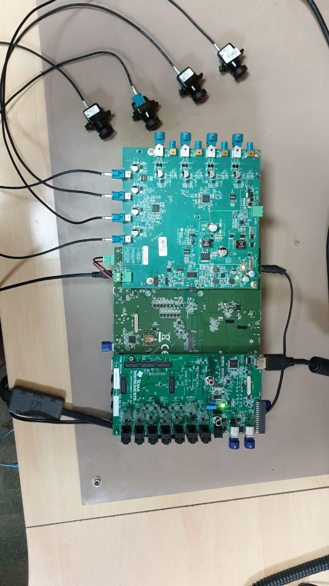
Fig. 5.14 Fusion1 Camera Setup¶